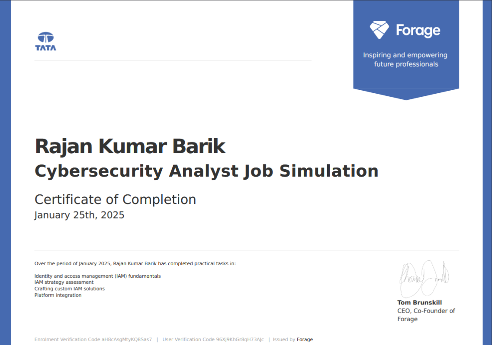
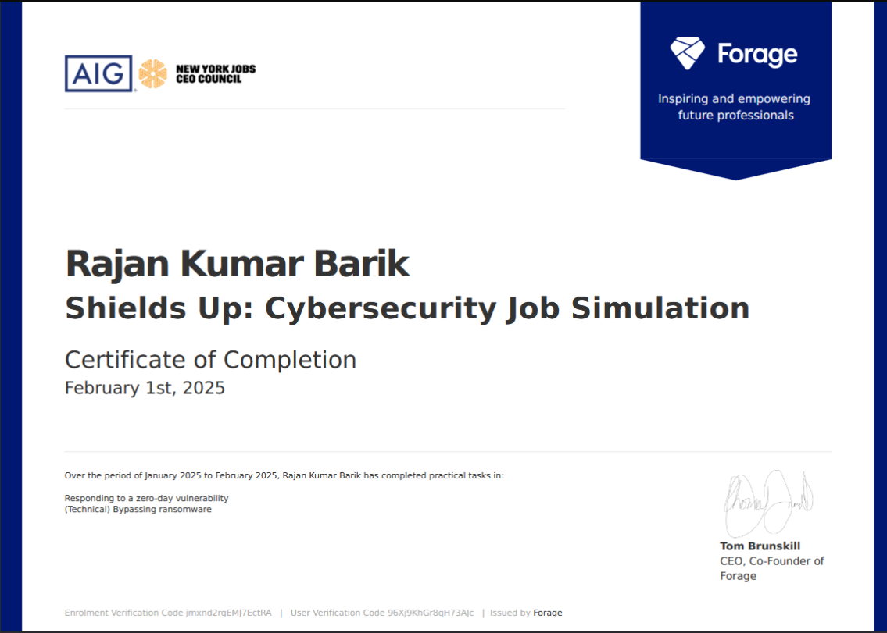
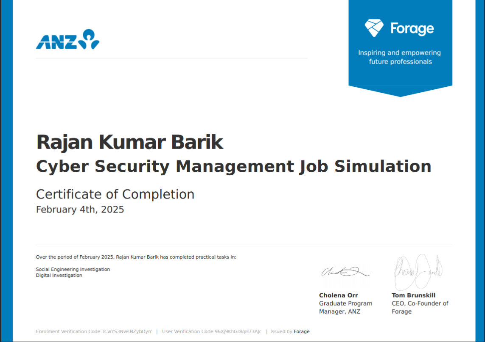
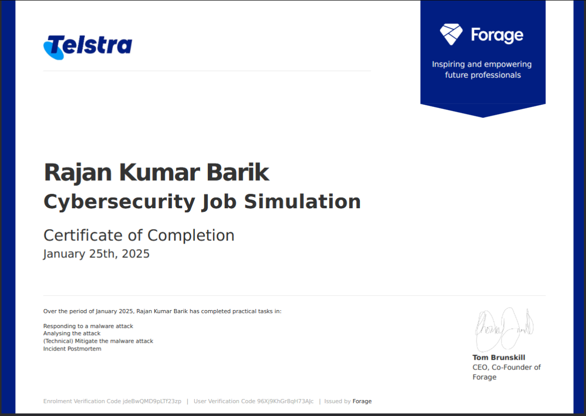
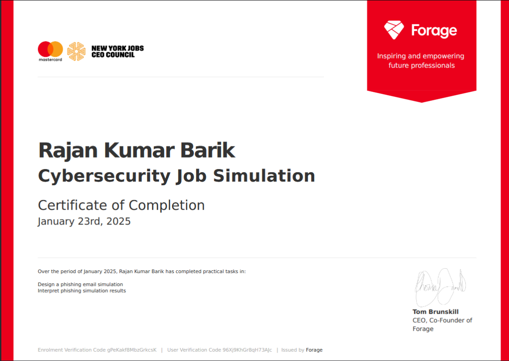

It's Yashdeep Sankhla

Name: Yashdeep Sankhla (Sentinel)
Profile: Cybersecurity Professional
Email: y4shsec@proton.me
Phone: +919898694801
Skills
About me
I am a Cybersecurity professional with hands-on experience in Digital Forensics & Incident Response (DFIR), SOC monitoring, and Vulnerability Assessment & Penetration Testing (VAPT). I have worked on forensic investigations using tools like Autopsy, performed log monitoring and threat detection using Wazuh SIEM, and network traffic analysis with Wireshark and Snort IDS. Along with strong fundamentals in networking and scripting, I am eager to contribute to incident response, threat hunting, and forensic investigations in a security-focused role.
I completed my B.Tech in Computer Science (Cyber Security) where I learned and practiced cybersecurity fundamentals, SOC operations, network security, forensics, and penetration testing. During my B.Tech in Computer Science (Cyber Security), I studied core concepts of cybersecurity including network security, ethical hacking fundamentals, digital forensics, incident response, and vulnerability assessment & penetration testing (VAPT). I gained hands-on practical exposure through projects and labs such as digital evidence investigation using Autopsy, packet capture and traffic analysis using Wireshark and Snort, and DDoS detection using Wazuh SIEM. This helped me build strong skills in threat detection, log analysis, and secure networking, along with report writing and documentation.
I am a L3 Network Engineer (Switching) with practical experience in designing, deploying, and managing enterprise network infrastructure across access, distribution, and core layers. I have strong expertise in configuring VLANs, trunking, Layer 2/3 features, and port security, along with troubleshooting network issues using tools like Wireshark and SolarWinds. I also have experience working with MikroTik routers, including DHCP, NAT, firewall rules, and load balancing. I am passionate about building secure, scalable networks and ensuring high availability and performance.
Education
BACHELOR OF Technology & Specialization in Cybersecurity
CGPA: 8.36 | Completed: April 2025
Silver Oak University, Ahmedabad, Gujarat, IN
Focused on cybersecurity fundamentals, digital forensics, incident response, and network security. Gained practical exposure through labs and projects such as forensic investigation using Autopsy, network traffic analysis, and vulnerability assessment.
Higher Secondary (HSC), Gujarat Board & Mathematics (Science Group A)
Score: 65% | Completed: May 2021
Eklavya School of Science, Ahmedabad, Gujarat, IN
Completed higher secondary education with core academic focus and foundational technical learning.
Professional Experience
Network Engineer (Switching)
Oct 2023 – Present
Zen Exim Pvt. Ltd.
- Design and deploy switching solutions across access, distribution, and core network layers.
- Configure VLANs, trunking, STP, EtherChannel, and Layer 2/Layer 3 switching features.
- Implement port security and network hardening practices to strengthen infrastructure security.
- Monitor network health, perform troubleshooting, firmware upgrades, and issue resolution using tools like Wireshark and SolarWinds.
Cybersecurity Intern
Aug 2023 – Sep 2023
Tech Defence Solutions
- Completed hands-on labs on TryHackMe, PortSwigger, and Hack The Box (HTB).
- Improved practical understanding of common web vulnerabilities, enumeration, and reporting.
- Strengthened core concepts of ethical hacking and web exploitation techniques.
Cybersecurity Intern
Feb 2024 – Mar 2024
Sigma Training Institute
- Performed penetration testing on VPN and wireless networks to identify security gaps.
- Conducted OSINT investigation to gather actionable public intelligence.
- Assisted in firewall configuration, access control, and security hardening practices.
Cybersecurity Intern
Jul 2024 – Aug 2024
Prodigy Infotech
- Developed Python-based security tools including Caesar Cipher, Password Strength Checker, and Packet Analyzer.
- Improved scripting and automation skills for security tooling and testing.
- Documented tool methodology, output validation, and results clearly.
Cyber Crime Investigator Intern
Aug 2024 – Sep 2024
Cyber Forensics Solutions (CFSS)
- Assisted in forensic investigation workflows and digital evidence handling processes.
- Performed metadata extraction and analysis to support investigation tasks.
- Prepared case documentation and digital evidence reporting with proper format.
Cybersecurity Intern
Aug 2025 – Sep 2025
Secuerium Technologies
- Performed VAPT on internal web applications and identified vulnerabilities.
- Executed OWASP-based vulnerability assessment and documented findings with remediation steps.
- Supported remediation verification and final security reporting.
Projects
Delivering cutting-edge solutions and innovative security tools to fortify the digital landscape.
- All
- Cybersecurity
- Development

Certifications
Demonstrated expertise through industry-recognized certifications, hands-on workshops, and participation in cybersecurity challenges.
Google Cybersecurity Professional (Coursera)
2024
Foundations of Cybersecurity (Google / Coursera)
6 Dec 2023
Connect and Protect: Networks and Network Security (Google / Coursera)
06 Feb 2024
Play It Safe: Manage Security Risks (Google / Coursera)
01 Jan 2024
Cisco Networking Academy – Networking Basics
05 Feb 2025


Achievements
🏆 RootCipher CTF 2025
Participated in RootCipher 2025 Capture The Flag (CTF) competition, where I solved real-world cybersecurity challenges involving web exploitation, OSINT, cryptography, and privilege escalation. This experience enhanced my problem-solving, technical analysis, and hands-on hacking skills in a competitive environment.

🏆 Bypass CTF 2025 - National-Level Capture The Flag Competition
Awarded a participation certificate as Team Lead at Bypass CTF 2025, a 36-hour national-level CTF with 500 teams, securing 256th rank, showcasing leadership and practical skills in web exploitation, forensics, and cybersecurity.

🛡️ Ethical Hacking Workshop – Indian Cyber Club
Participated individually in a 3-day Ethical Hacking Workshop by Indian Cyber Club, gaining hands-on exposure to ethical hacking techniques and core cybersecurity concepts.

Job Simulations
Tata Group - Cybersecurity Analyst Job Simulation
This job simulation provided an immersive experience of working as a Cybersecurity Analyst at Tata Group. It involved analyzing and securing a simulated network environment, identifying potential vulnerabilities, and implementing effective strategies to mitigate cybersecurity threats. The simulation allowed me to apply advanced techniques in threat detection, risk assessment, and incident response, mirroring the tasks and responsibilities of a real-world cybersecurity professional.

AIG Shields Up Cybersecurity Job Simulation
This job simulation offered a hands-on experience in cybersecurity operations, focusing on defending critical infrastructure in a simulated environment. Working as part of the cybersecurity team at AIG, I was tasked with identifying and neutralizing cyber threats, managing firewalls, and responding to simulated security incidents. The challenge emphasized real-world application of defensive strategies, threat intelligence analysis, and proactive risk management to safeguard sensitive data and maintain business continuity.

ANZ Australia Cyber Security Management Job Simulation
This job simulation provided an in-depth understanding of cybersecurity management within a large financial institution like ANZ Australia. I was responsible for overseeing the development and implementation of security policies, conducting risk assessments, and coordinating responses to security incidents. The simulation also involved evaluating and optimizing security infrastructure to ensure compliance with industry standards and regulatory requirements. It enhanced my strategic thinking in managing security operations and mitigating risks in a highly dynamic and regulated environment.

Telstra Cybersecurity Job Simulation
This job simulation immersed me in the role of a cybersecurity professional at Telstra, where I was tasked with securing the company’s extensive network infrastructure. The simulation involved identifying potential vulnerabilities, monitoring traffic for malicious activity, and deploying protective measures against cyber threats. I also focused on developing incident response protocols and enhancing the company's security posture by implementing cutting-edge cybersecurity solutions. This experience sharpened my technical and analytical skills while providing a deeper understanding of the complexities of cybersecurity in a telecom environment.

Mastercard Cybersecurity Job Simulation
In this job simulation, I focused on defending against phishing campaigns within Mastercard’s cybersecurity infrastructure. I was tasked with identifying and mitigating phishing attempts aimed at compromising sensitive data, educating employees about phishing threats, and strengthening the company's defenses. The simulation involved simulating phishing attacks, analyzing email headers, and deploying security measures such as email filtering and multi-factor authentication (MFA). This experience deepened my knowledge of social engineering tactics and enhanced my ability to protect organizations from phishing-related threats.

Tools
Harnessing industry-leading tools such as Kali Linux, Burp Suite, Ghidra, Metasploit, Wireshark, and more to conduct in-depth security assessments, identify vulnerabilities, and fortify systems against evolving threats.


Resume at a Glance
Ping Me
Let's connect! Feel free to reach out for collaborations, inquiries, or exciting opportunities.